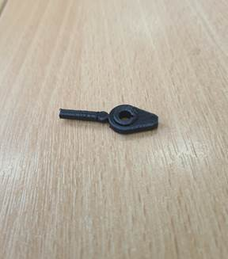
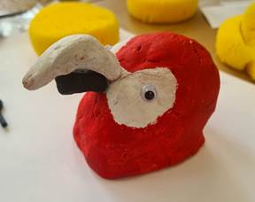
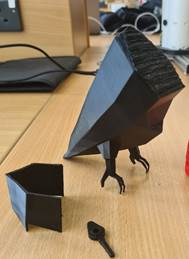
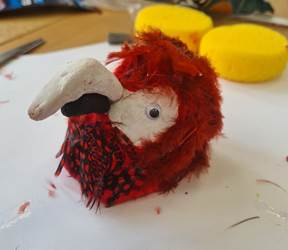
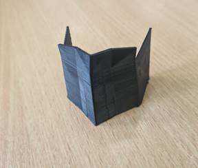

Module Title: Robotic Modelling and
Drone Skin Design
Title: 3D Printing a Parrot Prototype Using Blender
Introduction
This
comprehensive portfolio documents the intricate design and prototyping journey
of creating a lifelike parrot model standing on a tree branch. Through a blend
of digital modeling techniques, 3D printing technologies, and meticulous
aesthetic detailing, this project highlights the team's creativity, technical
proficiency, and dedication to achieving a stunning final artefact.
Design Process
The
entire design process was carefully planned, starting with conceptualization,
and ending with the production of intricate 3D models. Using Blender and, the
team carefully designed every part of the parrot, taking extra care to ensure
anatomical accuracy and aesthetic appeal.
Blender turned out to be the keystone of the
design process. Blender, which is well-known for its sturdy rendering engine,
accurate mesh editing features, and adaptable sculpting tools, provided the
team with an extensive arsenal to enable them to realize their creative vision
with unmatched control and precision.
Blender's
sculpting mode, which gives designers and artists strong tools for sculpting
digital clay, is one of its best features. With the help of these tools, users
may manipulate virtual clay intuitively and precisely, creating complex
features and organic patterns. Blender's sculpting capabilities played a
crucial role in this project's face feature shaping, enabling the parrot's
expression to remarkably capture the essence of its real-life counterpart with
surprising authenticity and nuance.
Additionally,
Blender's smooth integration with other elements of the design pipeline, like
rendering engines and 3D printing tools, promoted a more efficient workflow and
improved teamwork. Throughout the design and prototyping phase, compatibility
and interoperability were guaranteed by the ability to import and export a
variety of file formats, including STL for 3D printing.
In
addition, the group used Blender's reference photos to apply blocking
techniques, which helped them draw out the general shape and size of the parrot
model. This approach was an essential first step, giving subsequent sculpting
and detailed iterations a strong basis.
The
decision to partition the parrot into three distinct partshead, body, and
tailwas strategic, aimed at optimizing printing efficiency and ensuring ease
of assembly. Furthermore, the choice of PLA material for 3D printing was driven
by its versatility, affordability, and compatibility with the intricate details
of the model.
Fusion
360, a cloud-based 3D CAD/CAM program, was
used in tandem with Blender to build the pear shape concentric cam mechanism
for the moving chest of the parrot. The team designed exact mechanical
components with Fusion 360's integrated CAM functionality and parametric
modelling capabilities. Using Fusion 360, the concentric cam design not only
gave the parrot's posture a dynamic touch, but it further showed the team's
dedication to obtaining authenticity and realism in the finished product.

Techniques Used
Each
technique employed in the design and prototyping process played a crucial role
in realizing the vision of the parrot on a tree branch:
Digital
Clay for Face: The use of digital sculpting tools
allowed for precise manipulation of facial features, ensuring that the parrot's
expression captured the essence of its real-life counterpart.

3D
Printing: Through meticulous planning and
execution, the team utilized 3D printing technology to transform digital models
into tangible components. The iterative nature of this process enabled
refinement and optimization at every stage, resulting in high-fidelity prints
with exceptional detail.
Reference
Image Blocking in Blender: Utilizing reference images within
Blender, the team employed geometric shapes like cubes and spheres to block out
the basic form and proportions of the parrot model before detailed sculpting
began. This technique served as a foundational step, ensuring accuracy and
consistency throughout the design process while providing a clear roadmap for
subsequent sculpting and detailing iterations.
Fusion
360 for Mechanical Design: In Fusion 360, shapes like cylinders
were utilized to create the pear-shaped cam movement mechanism for the parrot's
moving chest. This parametric modeling approach allowed for precise control
over the design, ensuring smooth and reliable movement while maintaining
compatibility with the overall structure of the parrot model.
Solidifying
Internal Halo: In response to printing challenges,
the decision to solidify the internal halo demonstrated adaptability and
problem-solving skills. By prioritizing structural integrity, the team ensured
that the parrot would withstand the rigors of handling and display.

Hand
Painting and Feathers: The addition of hand-painted details
and real feathers elevated the parrot from a mere model to a work of art. Each
stroke of paint and carefully placed feather contributed to the overall
aesthetic richness and authenticity of the final artefact.

Parts to be Modeled/Printed
The
design and prototyping process encompassed the creation of several key
components, each integral to the final presentation of the parrot on a tree branch:
Internal
Skeleton: The internal skeleton provided the
structural framework for the parrot model, ensuring stability and articulation
while maintaining anatomical accuracy.

Wings: Detailed wings were modeled to replicate the natural form and
texture of a parrot's wings, incorporating intricate feather patterns and
contours for added realism.
Face
Plate: The face plate served as the canvas
for capturing the expressive features of the parrot, with precise detailing and
sculpting techniques employed to convey lifelike expressions and character.
Feet/Legs: The feet and legs were meticulously modeled to depict the
parrot's perching stance, with attention to anatomical proportions and joint
articulation for a naturalistic appearance.
Chest
Plate: The chest plate played a crucial role
in housing the mechanism for the parrot's moving chest, providing support and
stability while allowing for fluid motion.

Perch: The perch served as the parrot's habitat, providing a realistic
setting for the final presentation. Detailed modeling ensured authenticity and
immersion within the overall scene.
X2
Ball Joint Shoulder Design: The ball joint shoulder design
facilitated articulation and movement, allowing for dynamic poses and
interactions with the perch and surrounding environment.
Artefact: Parrot on Perch
The
final artefacta parrot delicately perched on a branchembodies the culmination
of the team's collaborative efforts and creative vision. From the intricately
sculpted features to the meticulously painted plumage, every detail speaks to
the dedication and craftsmanship invested in bringing the parrot to life.
The
parrot, meticulously crafted using a combination of digital modeling techniques
and traditional aesthetic detailing, stands as a testament to the team's
commitment to excellence and passion for their craft.
Placed
atop an intricately crafted branch, the parrot's habitat offers an appropriate
setting for its vivid feathers and expressive features. Every paintbrush stroke
and thoughtfully placed feather adds to the finished artifact's overall
authenticity and artistic depth, resulting in an engrossing visual story that
honors the beauty of the natural world.

Materials
The
selection of materials is a critical aspect of any 3D printing project, as it
directly influences the functionality, aesthetics, and overall quality of the
final artefact. In the case of the parrot prototype project, careful
consideration was given to various materials, including PLA, resin, ABS, and
nylon. Each material offers distinct properties and advantages, making them
suitable for different applications and scenarios.
PLA (Polylactic Acid)
Properties: PLA is a biodegradable thermoplastic
derived from renewable resources such as corn starch or sugarcane. It has
excellent printability, low warping tendency, and minimal shrinkage during
printing, making it suitable for detailed models with fine features.
Advantages:
o Ease of Printing: PLA is known for its ease of printing
on most desktop 3D printers, requiring minimal calibration and temperature
control.
o Affordability: PLA is inexpensive compared to other
materials, making it a cost-effective option for prototyping and hobbyist
projects.
o Environmental Friendliness: PLA is biodegradable and compostable,
making it an eco-friendly choice for sustainable manufacturing practices.
Limitations:
o Brittleness: PLA exhibits minimal impact
resistance and stiffness compared to other materials, limiting its suitability
for functional prototypes subjected to high stress or load-bearing
applications.
o Temperature Sensitivity: PLA has a lower glass transition
temperature (around 60-65C) compared to materials like ABS, limiting its
application in high-temperature environments.
Resin
Properties: Resin-based 3D printing, also known
as stereolithography (SLA) or digital light processing (DLP), uses photopolymer
resins cured by UV light to create high-resolution models with smooth surface
finishes.
Advantages:
o High Resolution: Resin printers can
produce detailed models with fine features and smooth surface finishes, making
them suitable for intricate prototypes and visual presentations.
o Durability: Resin parts exhibit superior strength
and durability compared to filament-based prints, with excellent dimensional
accuracy and surface quality.
Limitations:
o Post-processing Requirements: Resin prints typically require
post-processing steps such as UV curing and resin washing, adding time and
complexity to the printing process.
o Material Handling: Resin can be messy and potentially
hazardous if not handled properly, requiring safety precautions and specialized
equipment for storage and disposal.
ABS (Acrylonitrile Butadiene Styrene)
Properties: ABS is a thermoplastic polymer known
for its strength, toughness, and impact resistance. It has a higher glass
transition temperature than PLA, making it suitable for applications requiring
durability and stability.
Advantages:
o Mechanical Properties: ABS offers excellent mechanical
properties, including high impact resistance, stiffness, and dimensional
stability, making it ideal for functional prototypes and end-use parts.
o Post-processing Options: ABS parts can be post-processed using
acetone vapor smoothing to achieve a smooth surface finish and improve overall
aesthetics.
Limitations:
o Warping and Shrinkage: ABS tends to warp and shrink more
than PLA during printing, requiring a heated print bed and enclosed build
chamber to minimize deformation and warping.
o Fume Emissions: ABS emits potentially harmful fumes
when heated, requiring adequate ventilation or printing in a well-ventilated
area to ensure safety.
Nylon
Properties: Nylon is a versatile thermoplastic
known for its strength, flexibility, and impact resistance. It has a high
melting point and excellent chemical resistance, making it suitable for a wide
range of industrial applications.
Advantages:
o Strength and Durability: Nylon offers exceptional
strength-to-weight ratio and impact resistance, making it ideal for functional
prototypes and parts subjected to high stress.
o Flexibility: Nylon is flexible and resilient,
allowing for the creation of parts with complex geometries and intricate
designs.
Limitations:
o Printability: Nylon can be challenging to print
with traditional desktop FDM printers due to its tendency to warp and absorb
moisture, requiring specialized equipment and drying techniques for optimal
results.
o Material Cost: Nylon filament tends to be more
expensive than PLA or ABS, adding to the overall cost of printing projects.
Decision-making Process and Future
Applications
While
PLA emerged as the material of choice for the parrot prototype project due to
its ease of printing, affordability, and compatibility with detailed models,
considerations were also given to alternative materials such as resin, ABS, and
nylon. The decision to select PLA was based on a combination of factors,
including project requirements, budget constraints, and material properties.
In
future projects or applications were, alternative materials may be more
suitable, such as high-strength prototypes, functional parts, or specialized
applications requiring specific material properties, resin, ABS, or nylon could
be viable options. For example, resin may be preferred for producing highly
detailed models with intricate features, ABS for functional prototypes
requiring durability and impact resistance, and nylon for parts subjected to
high stress or flexibility requirements.
Techniques Not Used
Certain
techniques, such as scanning the face plate, were deemed impractical due to
logistical constraints or lack of suitable reference material. Similarly, while
alternative materials were considered, their limitations in terms of
printability or compatibility with the project's objectives led to their
exclusion from the final selection.
Aesthetic Detailing
Meticulous
attention to aesthetic detailing is evident throughout the parrot's design and
fabrication process. From the painstaking sanding of model surfaces to the
delicate application of paint and feathers, each step was undertaken with the
utmost care to ensure a visually striking and emotionally resonant final
product.
Sanding and Surface Preparation
Before
applying any aesthetic treatments, the surfaces of the printed parts were
carefully sanded to remove any imperfections, layer lines, or rough edges
resulting from the 3D printing process. This step ensured a smooth and uniform
surface finish, providing a clean canvas for subsequent detailing and painting.
Strategic Placement and Composition
Careful
consideration was given to the placement and composition of the parrot on its
perch, with attention paid to balance, proportion, and spatial relationships.
By strategically positioning the parrot within its environment, the final
presentation achieved a sense of dynamism and harmony, drawing viewers into the
scene and evoking a sense of wonder and enchantment.
Conclusion
Every
stage of the process of designing and building a parrot perched on a tree limb
was an example of inventiveness, technical mastery, and teamwork. The
culmination of these efforts produced an amazing product that honors the beauty
of nature while also captivating the imagination.
Every
stage of the project required creativity and devotion, from the original
concept to the painstaking detailing and construction. Blender became the
workhorse of the design process, offering an unmatched platform for modelling,
sculpting, and rendering, while Fusion 360 gave mechanical aspects more utility
and accuracy.
The
use of many techniques, such as digital sculpting and 3D printing, was crucial
in achieving the parrot's vision with unmatched fidelity and subtlety. A
careful balance between price, practicality, and aesthetic appeal was
demonstrated by the choice to use PLA as the main material, and consideration
of substitute materials demonstrated a dedication to research and development.
The
parrot, perched on its finely constructed perch, is a monument to the limitless
possibilities of digital fabrication as well as a beautiful work of art. Every
paint stroke and carefully applied feather conveys a tale of artistry, skill,
and respect for the natural world.
In
brief, this portfolio honors the strength of teamwork, the elegance of
workmanship, and the revolutionary possibilities of technology in the fields of
design and the arts. In addition to producing a lifelike parrot, this project
has ignited people's imaginations, stirred their feelings, and served as a
constant reminder of the tremendous beauty that is all around us.
References
Video: How to make a Stylized Low poly Bird in Blender 2.93 |
Blender Beginner Tutorial (youtube.com)
M.
Graves, Le Corbusiers Drawn References. Introduction to Le Corbusiers
Selected Drawings, Rizzoli, New York, 1981.
Blender
Jun-Sik
Kim, Ho-Won Kim, In So Kweon, "A camera calibration method using
concentric circles for vision applications", Proc. of the 5 Asian
Conference on Computer Vision(ACCV02), IEEE Press,
vol. 2, pp. 515-520.
Show in
Context Google Scholar
Guang
Jiang, Long Quan, "Detection of concentric circles for camera
calibration", Proc. IEEE International Conference on Computer Vision(ICCV05), IEEE Press, vol. 1, pp. 333-340.